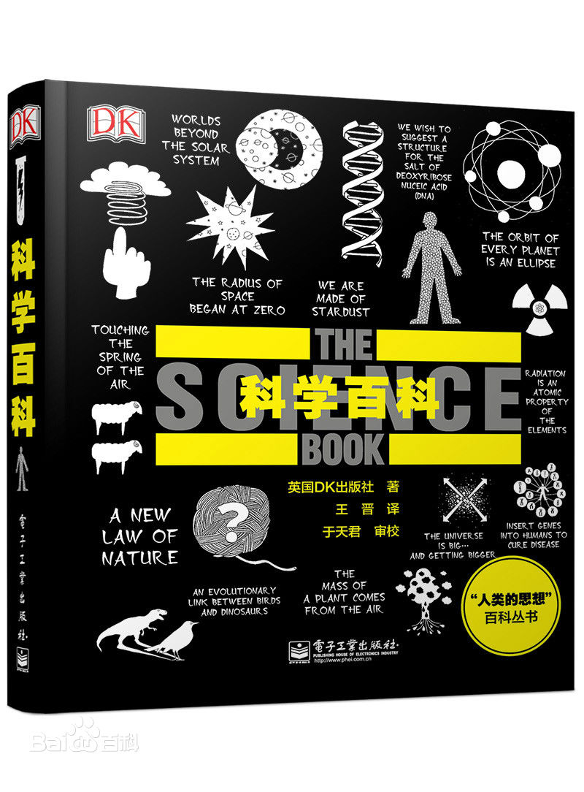
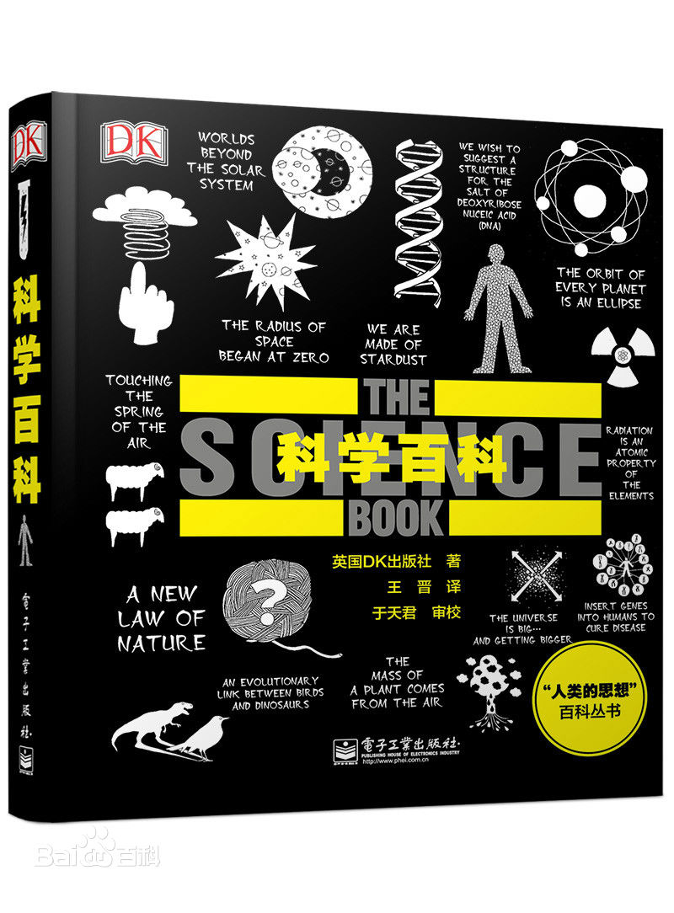

关于此网站
本网站致力于为每一个爱书人士推出能激励个人成长的好书！只有当一本书提供了精神成长、工作技能的提升，才会被我们所推荐！读书的益处:
1. 读书可以增加谈吐深度2.读书可以保持大脑的活跃
3.读书可以使人抵抗孤独
4.读书可以释放压力
5.读书使人明智
小组信息
学院：经贸学院班级：17电子商务B2班
小组：“高尔基”小组
《科学百科》
宇宙起源于大爆炸吗？光究竟是波还是粒子，抑或两种性质兼而有之？人类是全球变暖的主要原因吗？是否存在能够解释一切的万有理论？科学犹如一盏明灯，在它的指引下，我们不断开创先进的技术，拓展新的知识领域，了解我们所在的世界，同时探索理论上存在的多元宇宙。
《科学百科》一书语言通俗易懂，解释简练精辟，更重要的是，鲜有晦涩难懂的科学术语。书中采用图表的形式将复杂理论一一拆解，引用的经典语录让你将科学发现印刻于脑海，而妙趣横生的插图会增进你对科学的深入理解。
不管你对科学的了解是深是浅，不论你是求知若渴的学生，还是醉心研究的学者，本书都会带给你意想不到的启发。
该丛书是由著名的英国DK出版公司授权电子工业出版社出版的介绍全人类思想的百科丛书。该丛书以人类自古至今的各领域的人物和事件为线索，全面解读了各学科领域的顶级思想，是了解人类文明发展历程的不二之选。
无论你是未涉足某类学科，或是有志于踏足某领域并向深度和广度发展，还是已经成为专业人士，这套书都会给你以智慧上的引领和思想上的启发。读这套书就像与人类历史上的伟大灵魂对话，让你无不惊叹与感慨。该丛书包罗万象的内容、科学严谨的结构、精准细致的解读，以及全彩的印刷、易读的文风、精美的插图、优质的装帧，无不带给你一种全新的阅读体验，是一套极具收藏价值的人文社科类经典读物。
《科学百科》一书语言通俗易懂，解释简练精辟，更重要的是，鲜有晦涩难懂的科学术语。书中采用图表的形式将复杂理论一一拆解，引用的经典语录让你将科学发现印刻于脑海，而妙趣横生的插图会增进你对科学的深入理解。
不管你对科学的了解是深是浅，不论你是求知若渴的学生，还是醉心研究的学者，本书都会带给你意想不到的启发。
该丛书是由著名的英国DK出版公司授权电子工业出版社出版的介绍全人类思想的百科丛书。该丛书以人类自古至今的各领域的人物和事件为线索，全面解读了各学科领域的顶级思想，是了解人类文明发展历程的不二之选。
无论你是未涉足某类学科，或是有志于踏足某领域并向深度和广度发展，还是已经成为专业人士，这套书都会给你以智慧上的引领和思想上的启发。读这套书就像与人类历史上的伟大灵魂对话，让你无不惊叹与感慨。该丛书包罗万象的内容、科学严谨的结构、精准细致的解读，以及全彩的印刷、易读的文风、精美的插图、优质的装帧，无不带给你一种全新的阅读体验，是一套极具收藏价值的人文社科类经典读物。
关于书籍的格言
为乐趣而读书。 —— 毛姆 读书之法，在循序而渐进，熟读而精思。 —— 朱熹
读书使人心明眼亮。 —— 伏尔泰